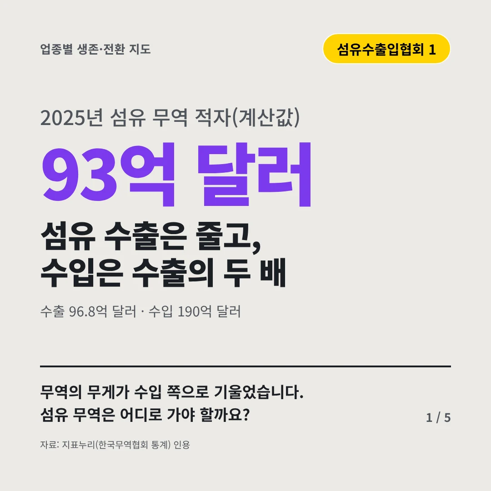
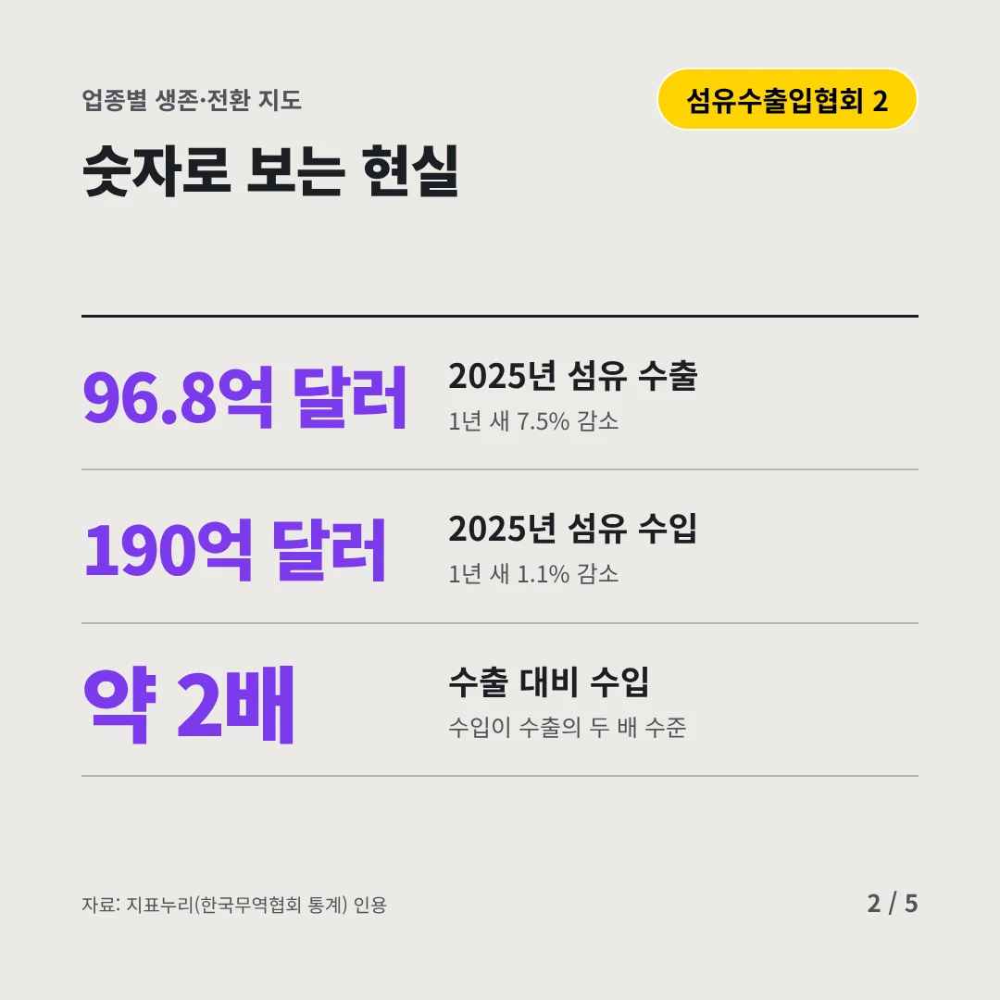
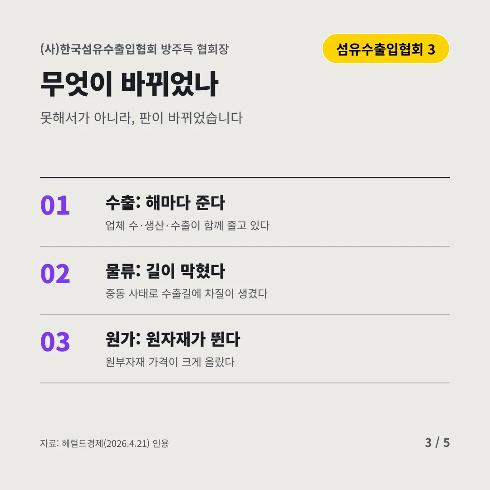
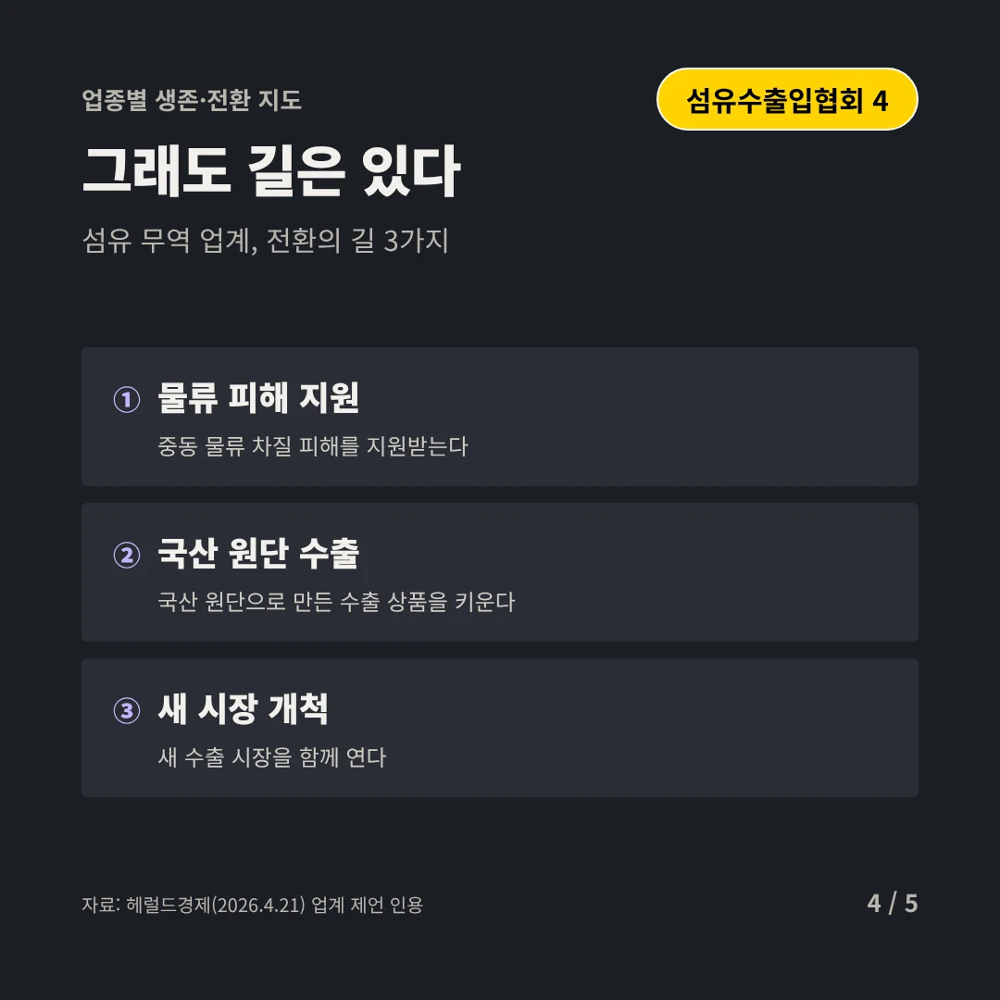
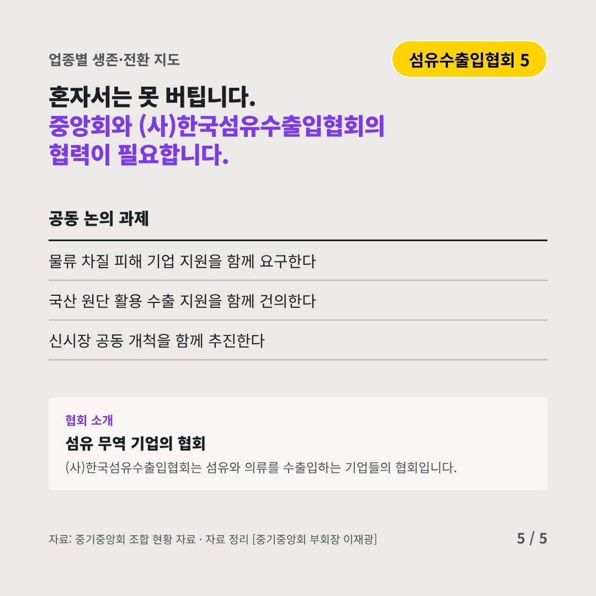
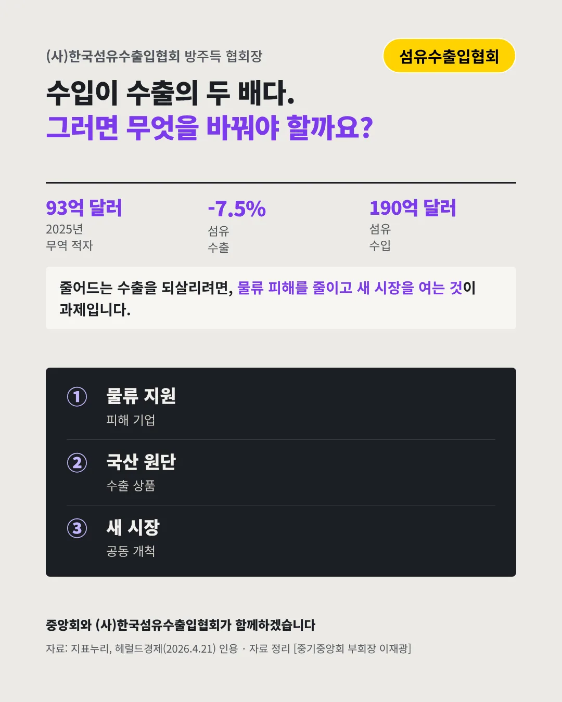

(사)한국섬유수출입협회방주득 협회장
섬유 수출은 줄고, 수입은 수출의 두 배
93억 달러 2025년 섬유 무역 적자(계산값)






무역의 무게가 수입 쪽으로 기울었습니다. 섬유 무역은 어디로 가야 할까요?
숫자로 보는 현실
- 96.8억 달러2025년 섬유 수출1년 새 7.5% 감소
- 190억 달러2025년 섬유 수입1년 새 1.1% 감소
- 약 2배수출 대비 수입수입이 수출의 두 배 수준
무엇이 바뀌었나
- 수출: 해마다 준다업체 수·생산·수출이 함께 줄고 있다
- 물류: 길이 막혔다중동 사태로 수출길에 차질이 생겼다
- 원가: 원자재가 뛴다원부자재 가격이 크게 올랐다
그래도 길은 있다
- 물류 피해 지원중동 물류 차질 피해를 지원받는다
- 국산 원단 수출국산 원단으로 만든 수출 상품을 키운다
- 새 시장 개척새 수출 시장을 함께 연다
한 장 요약

협회 소개
(사)한국섬유수출입협회는 섬유와 의류를 수출입하는 기업들의 협회입니다.
자료: 지표누리(한국무역협회 통계), 헤럴드경제(2026.4.21)